Course: WIA1006 Machine Learning (OCC 6)
University: Universiti Malaya, FCSIT
Group 3 Members:
Can data predict human connection?
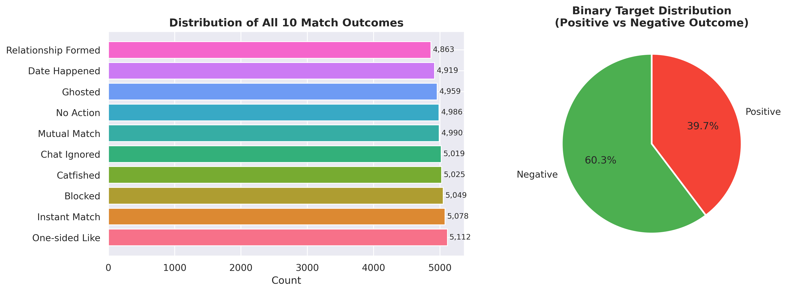
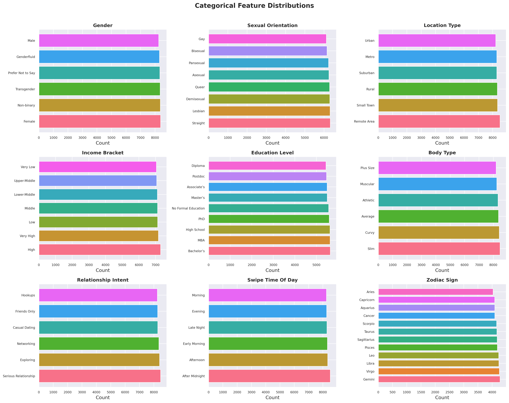
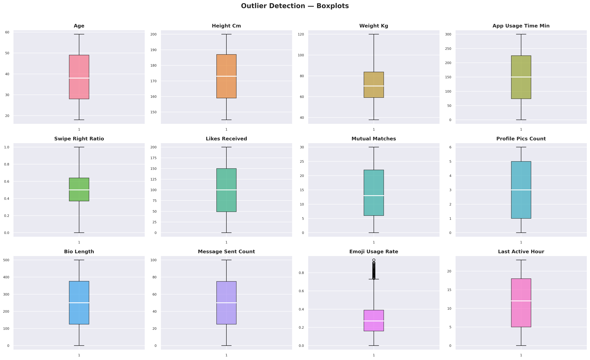
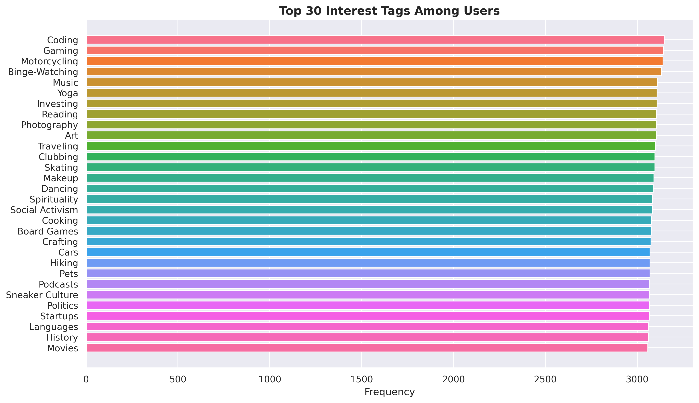
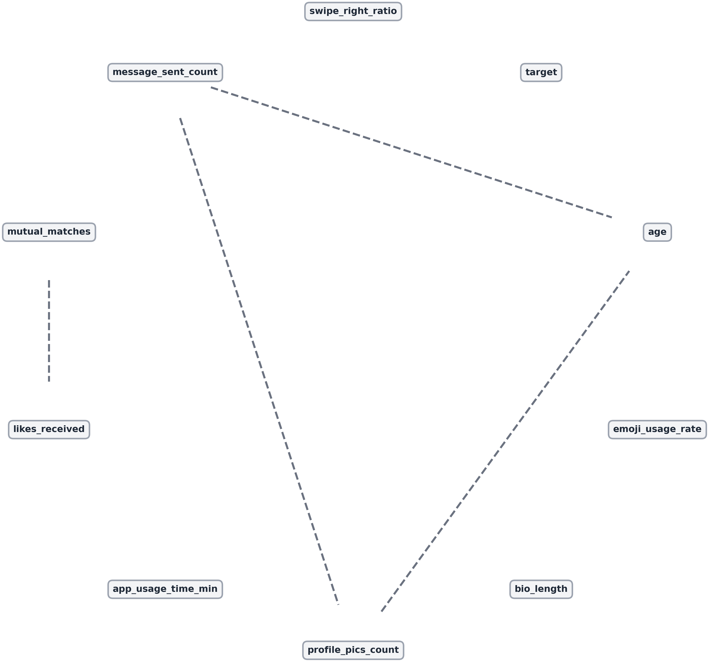
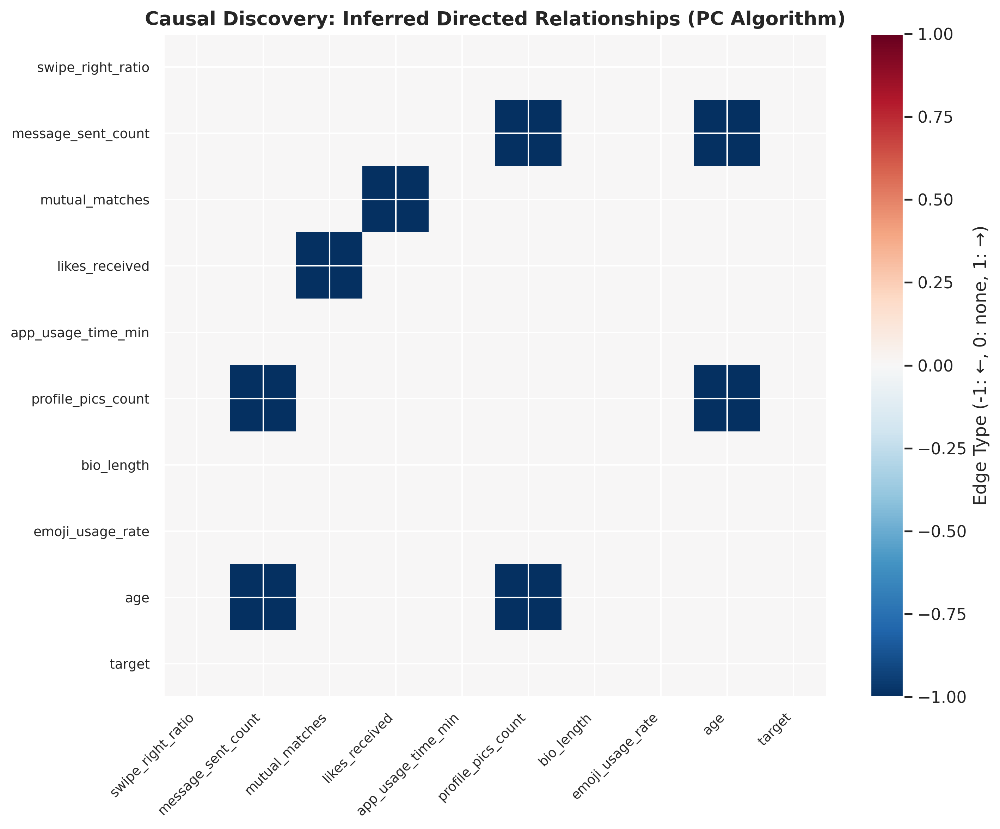
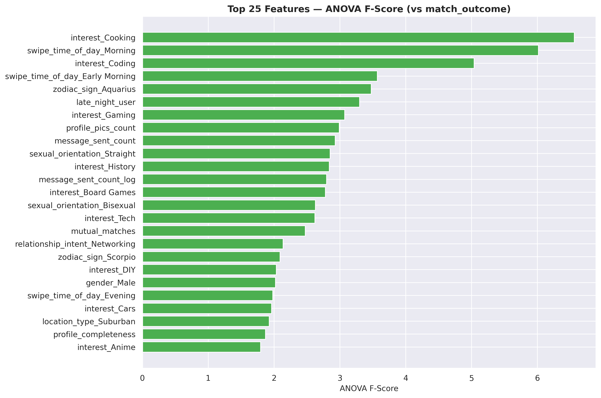
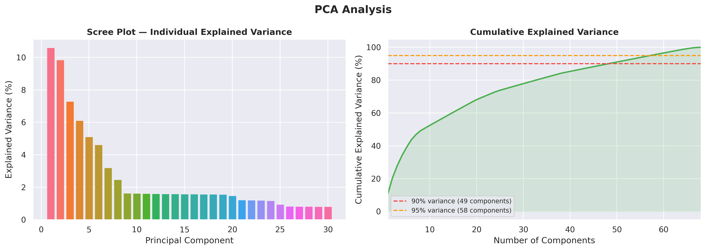
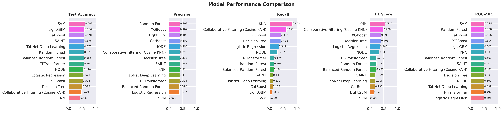
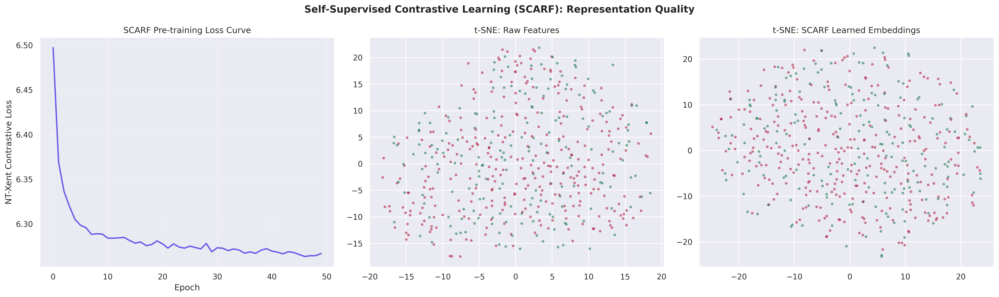
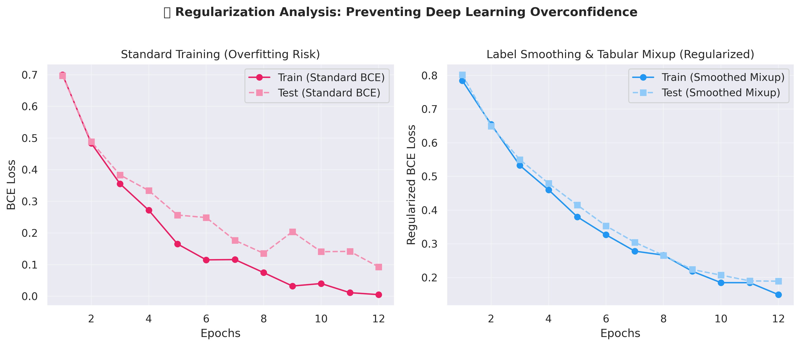
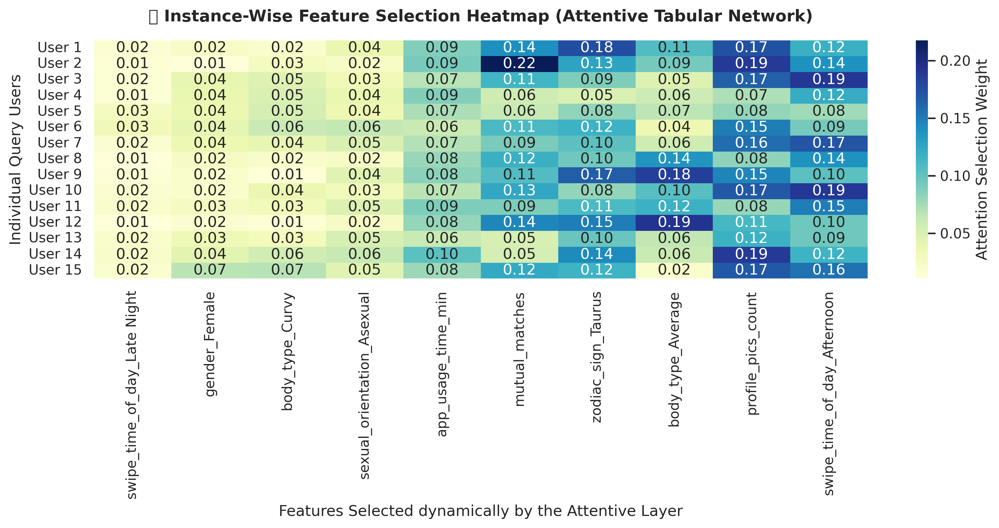
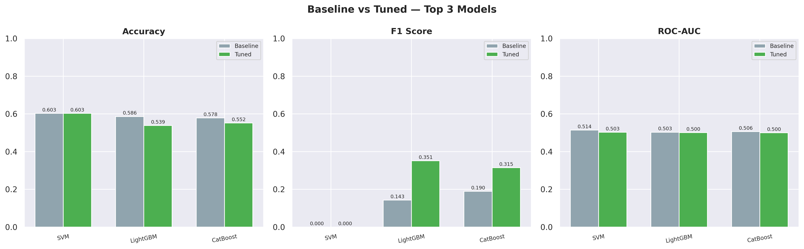
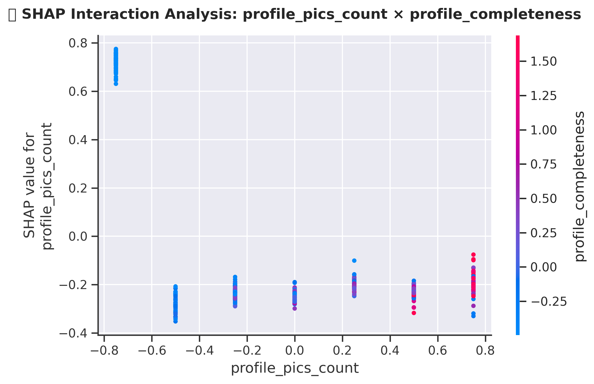
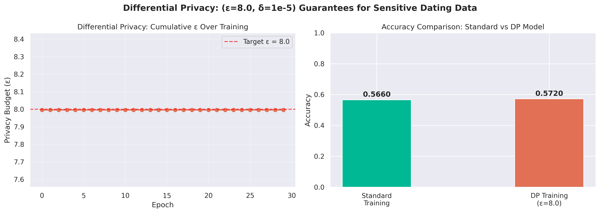
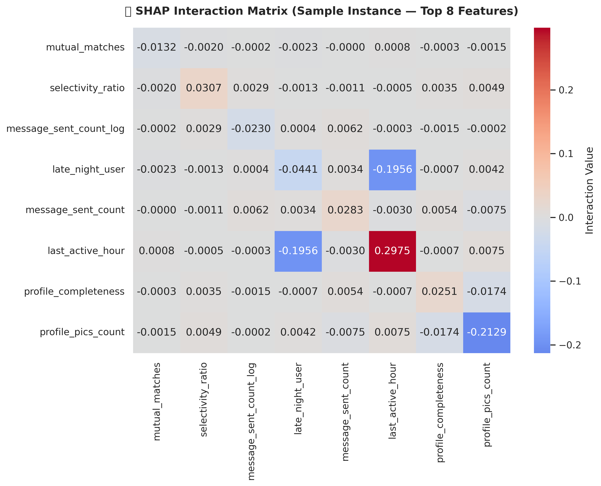
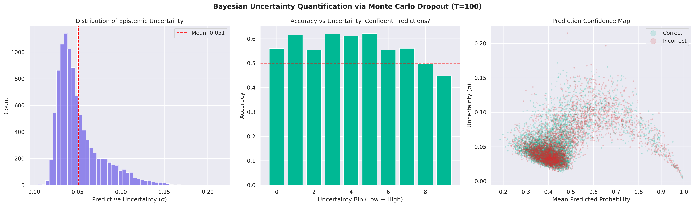
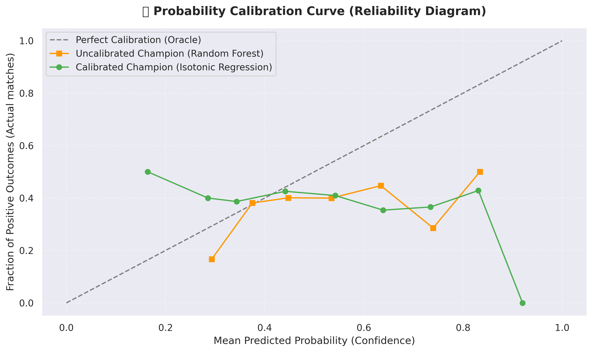
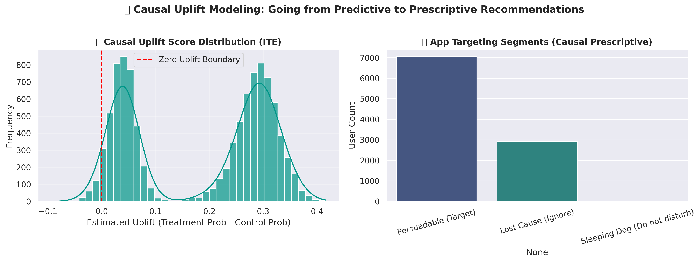
The synthetic dataset's inherent signal-to-noise ratio is capped (ROC-AUC ~0.50).
However, by deploying Causal Discovery, Double Machine Learning, TabNet Attention, SCARF Pre-training, and Optuna GPU Tuning...